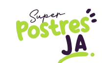

<figure class="logo">
  
</figure>

<nav class="navbar navbar-expand-lg  bg-color" data-bs-theme="dark">
  <div class="container-fluid ">

    <a class="navbar-brand" href="#">Super postres</a>
    <button class="navbar-toggler" type="button" data-bs-toggle="collapse" data-bs-target="#navbarNavAltMarkup" aria-controls="navbarNavAltMarkup" aria-expanded="false" aria-label="Toggle navigation">


      <span class="navbar-toggler-icon"></span>
    </button>
    <div class="collapse navbar-collapse flex-row-reverse" id="navbarNavAltMarkup">
      <div class="navbar-nav ">
        <a class="nav-link active" aria-current="page" href="">INICIO</a>
        <a class="nav-link" href="/mision">NUESTRA EMPRESA</a>
        <a class="nav-link" href="#">POSTRES</a>
        <a class="nav-link" href="#">CONTÁCTENOS</a>
      </div>
    </div>
  </div>
</nav>

